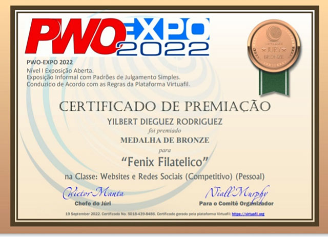
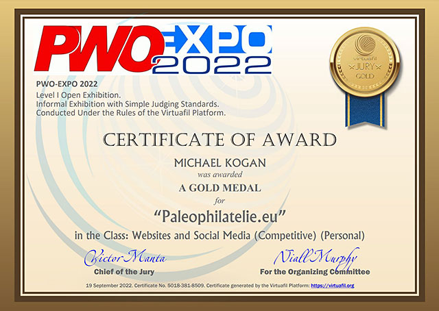
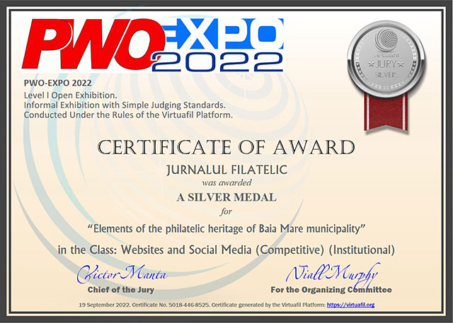
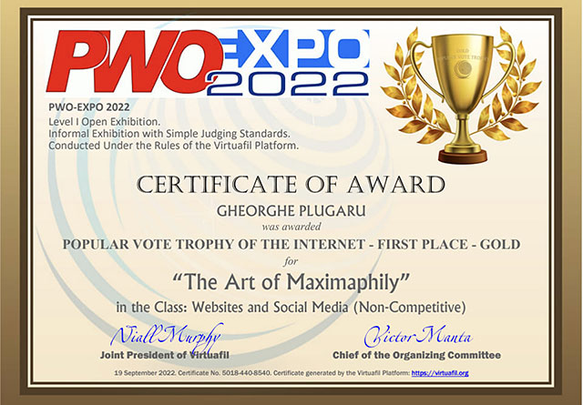
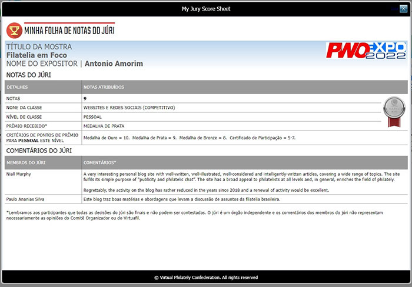
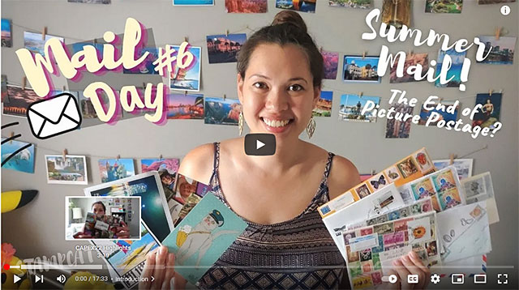

|
|

By Philatelic Webmasters for Philatelic Webmasters
PWO-EXPO 2022: CLOSING MESSAGE
Dear Friends,
On September 19 2022 PWO-EXPO 2022 was successfully concluded.
The exhibition exceeded all our expectations. After the closing of participants' registration on the July 9 2022 we counted 72 exhibits from 50 participants, representing 22 countries worldwide. All exhibits will remain on display at the exhibition site for an indefinite period.
The virtual exhibition platform "Virtuafil" performed superbly at all stages with it's integrated facilities for participant registration, exhibit display, popular voting, jury evaluations and dynamic award certificate generation. The Virtuafil platform was a perfect fit for this unique exhibition of philatelic of websites and social media sites.
The Palmares document is now available for viewing and downloading. The quality of the exhibits was generally excellent. The Jury has awarded 12 Gold medals, 12 Silver medals and 21 Bronze medals. The Organizing Committee offers sincere thanks to our volunteer jury members: James Gavin (Australia), Paulo Ananias Silva (Brazil) and Gheorghe Plugaru (Moldova). Each judge has done an outstanding job in their constructive, well-considered and impartial evaluations of the competitive exhibits.
Medals and certificates are in digital form and can be downloaded (PDF) by participants by logging in to their personal profiles . Individual Score Sheets, containing the jury evaluation comments, may also be downloaded.
In terms of public (popular) voting, the response has been truly astonishing. The list of popular voting awards has also been published. A total of 2,839 votes were cast. Popular voting was open to all exhibits, whether competitive or not. The top three most popular exhibits in each Class were awarded the Gold, Silver or Bronze Popular Vote Trophy of the Internet for that Class in the form of a special, downloadable digital certificate. These certificates may also be downloaded by logging in to your personal profile .
The Organizing Committee offers our sincere thanks to all participating exhibitors, all the exhibition visitors and voters, and to all our friends, supporters and promoters all over the world. We look forward to seeing you all again at the next edition of PWO-EXPO.
Best wishes and philatelic greetings.
Victor Manta - Chief of the OC and President of the Philatelic Webmasters Organization
Niall Murphy - Member of the OC and Co-founder of Virtuafil
September 19, 2022.
PWO-EXPO 2022: COMMENTS & FEEDBACK
Please find below excerpts from comments and some images found on exhibitors' entries. Being published on the internet we could reproduce them on this page too.
POW, ya el Fénix ha obtenido vario resultados satisfactorios gracias a los seguidores de la filatelia en cuba y parte del mundo, gracias a todos y a los organizadores de la exposición y al presidente de POW el máximo responsable de esta gran idea al Sr. Victor Manta, felicitaciones al comité organizador.
(POW, the Phoenix has already obtained several satisfactory results thanks to the followers of philately in Cuba and part of the world, thanks to everyone and to the organizers of the exhibition and to the president of POW, the person most responsible for this great idea, Mr. Victor Manta Congratulations to the organizing committee.) Note: All translations by Google.

https://fenixfilatelico.wordpress.com/2022/09/18/fenix-filatelico-de-fiesta/
PWO-EXPO 2022 was presented by Virtuafil, an informal organisation and online platform which offers an alternative to the traditional, formal philatelic organisations, designed to minimize restrictions and maximize open and zero-cost participation at exhibitions.
As an independent organisation, Virtuafil has instituted a new, distinct Philatelic Class: “Websites and Social Media”.
This new Class is not connected with the traditional Class of Philatelic Literature.

http://www.paleophilatelie.eu/awards.html
Agradeço a oportunidade de participar e deixo incentivo à organização e a outras entidades filatélicas para utilização deste método de divulgação da filatelia, que de forma simplificada convida a participação de filatelistas arredados das exposições filatélicas "tradicionais". Esses eventos, no meu entendimento, têm perdido algum interesse por parte de muitos e cujos modelos rígidos (de avaliação, apresentação, de acesso, e mesmo de interesse geral) se mostram antiquados e incapazes de se adequarem aos tempos modernos.
(I am grateful for the opportunity to participate and encourage the organization and other philatelic entities to use this method of disseminating philately, which, in a simplified way, invites the participation of philatelists away from "traditional" philatelic exhibitions. These events, in my opinion, have lost some interest on the part of many and whose rigid models (of evaluation, presentation, access, and even general interest) are outdated and incapable of adapting to modern times.)
https://jcura.blogs.sapo.pt/premio-conquistado-na-pwo-expo-2022-144922
A Silver Award Certificate:

Ce surpriză!!! Pagina "The Art of Maximaphily" a adunat cele mai multe voturi în concursul VOTUL POPULAR și a obținut Trofeul de Aur. Ma bucur nespus de mult, și această preferință a publicului îmi dă încrederea că ceea ce se postează pe această pagină bucură nu numai ochiul, dar și sufletul celor pasionați in ale maximafiliei. Ne motivează și mai mult și sper sa o ținem așa și pe viitor.
Doresc să aduc mulțumiri organizatorilor expoziției PWO EXPO-2022. A fost o premieră mondială și cu siguranță a fost un succes. Sper sa ne întâlnim și la anul viitor și sunt sigur că numărul participanților la expoziție va crește semnificativ.
Încă odată MULȚUMESC tuturor celor ce și-au dat votul pentru aceasta pagină.
(What a surprise!!! The page "The Art of Maximaphily" gathered the most votes in the POPULAR VOTE contest and won the Gold Trophy. I am very happy, and this public preference gives me the confidence that what is posted on this page pleases not only the eye, but also the soul of those who are passionate about maximaphilia. It motivates us even more and I hope to keep it that way in the future.
I would like to thank the organizers of the PWO EXPO-2022 exhibition. It was a world premiere and it was definitely a success. I hope to meet again next year and I am sure that the number of participants in the exhibition will increase significantly.
Once again THANK YOU to everyone who voted for this page.)

https://www.facebook.com/profile.php?id=100060053049993
Bravo to all organizers and participants in this "global concert of philatelic values"!
I participate with 4+3 exhibits, and I will visit with excitement ALL the participating exhibits and their websites!
https://thestampforum.boards.net/thread/9540/cool-expo-virtual-stamp-exhibition
A Score Sheet with Jury's Comments:

Saiu em 10/09/2022 o resultado final da amostra (primeira realizada nessa modalidade) de sites/blogs/Mídias Sociais que tenham como tema - Filatelia. 72 exibições de 50 participantes , representando 22 países . Uma votação popular com mais de 2000 votos . Achei extremamente positiva a nossa participação, visibilidade enorme para um público de diversos países. Tenho o meu site (desde o antigo) indexado na lista da PWO - Philatelic Webmasters Organization. Agradeço a toda comissão organizadora do evento e jurados - A importante opinião e justificativa para a medalha de prata , grande estímulo para continuarmos escrevendo e divulgando a filatelia.
( I thought our participation was extremely positive, with enormous visibility for an audience from different countries. I have my site (from the old one) indexed in the list of the PWO - Philatelic Webmasters Organization. I thank all the organizing committee of the event and the judges - The important opinion and justification for the silver medal, a great stimulus for us to continue writing and disseminating philately.)
https://filateliaemfoco.blogspot.com/2022/09/pwo-expo-2022-resultado-final.html
I visited a lot of remarcable exhibits but I would like to close the presentation with my personal preference, namely a series of lively reports on YouTube by TheStampCat (Lisa Berthin) from Canada, rewarded with a well-deserved gold medal in this competition.
"Stampcat Stamps Youtube channel is a place to view the exciting world of philately through the eyes of a young new collector. The episodes aim to show viewers all that we can learn from a just simple stamp- when was it issued? Where? What does it show? Why was it issued? Embrace curiosity (after all, cats are known for this) and also the joy of discovering what stories can be discovered from stamps."

https://www.youtube.com/watch?v=s00zSaXieR8
Comments from the Jury:
"The informal and friendly presentation style and infections enthusiasm are greatly appreciated. This goes to the heart of philatelic promotion for the current and next generations in the digital era. This YouTube video channel makes a significant contribution to the field of philately, especially for beginner and intermediate philatelists, but also very enjoyable for more senior viewers. Good research, educational value and basic appreciation of simple artistic beauty of philately are all in evidence."
"I have watched the "Opening Viewer Mail" video and I was enchanted as well by the shown postcards and stamps as by the the verve and enthusiasm of the author of the presentation. An exceptional work and an original advertisement for philately, the hobby of all of us. It is undoubtedly one of the most successful thematic exhibits of PWO-Expo 2022, in a field for which so-called philatelic experts turn their noses up, but which enjoys, and rightly so, the sympathy of collectors from all over the world!"
Congratulations Lisa, and keep up the good work. Undoubtely, you are the present and the future of modern stamp collecting and of attractive philatelic journalism!
Victor Manta